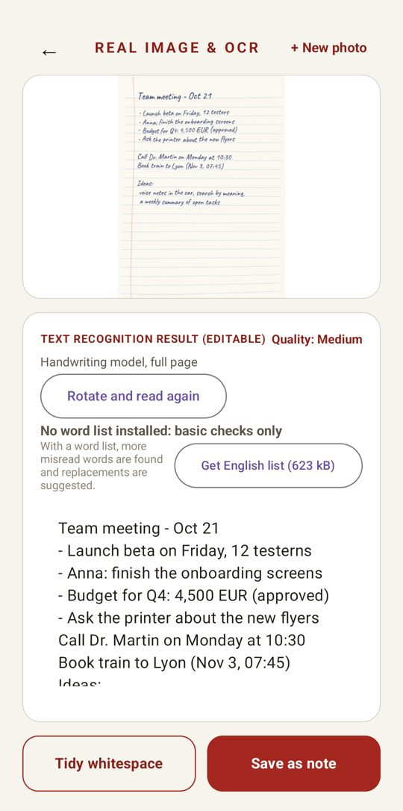
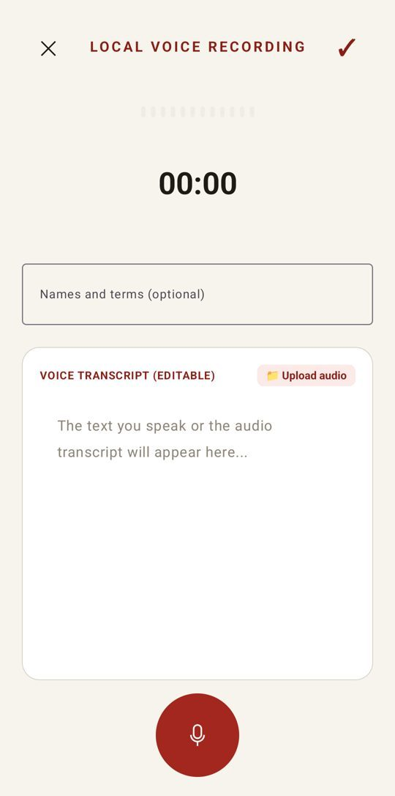
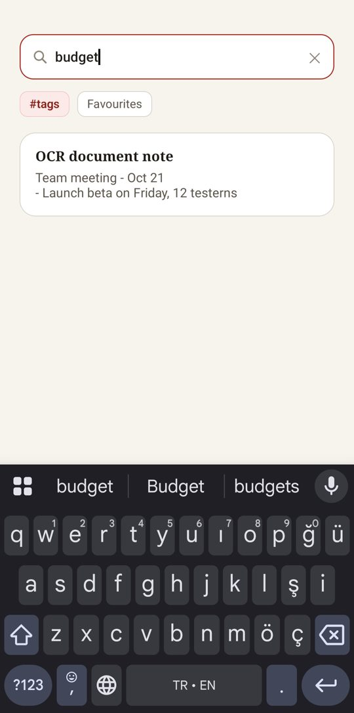

Offline · private · on your device
Your privatesecond brain.
Capture handwriting, PDFs, photos and voice. Ask your notes questions and find ideas by meaning. All of it runs on your phone or tablet.
Offline · private · on your device
Capture handwriting, PDFs, photos and voice. Ask your notes questions and find ideas by meaning. All of it runs on your phone or tablet.
Your notes, photos and recordings never leave your device.



Ask in your own words and get an answer with the notes it came from.
Photograph a page: Penra flattens it, turns it upright and reads it with an on-device AI model. Multi-page documents and PDFs too.
Record a meeting, lecture or idea. Text appears while you speak; different speakers are told apart.
"The meeting about money" finds the note even if it never says "money". Related notes and links are found for you.
Pens and a highlighter on top of photos, screenshots and PDF pages.
Translate notes on the device. Tags, templates, to-do boards, and hiding private details before sharing.
English, German, French, Spanish, Italian, Portuguese, Dutch, Polish, Swedish, Danish, Norwegian, Finnish, Czech, Romanian and Turkish.
Coming to Google Play. Closed beta on Android now.
Yes. Penra reads handwriting, transcribes voice, searches and answers questions entirely on your Android phone or tablet. The AI models are downloaded once; after that everything works offline.
No. There is no sign-up and no Penra server. Notes, photos and recordings stay on your device. There are no ads, no analytics and no tracking.
Yes. Take a photo of a page and an on-device AI model reads everyday handwriting, forms, lists and printed text, including multi-page documents and PDFs.
A place that keeps what you capture and helps you find and use it later. Penra links your notes, finds them by meaning and answers questions from them, privately on your device.
Android phones and tablets. It works best with 6 GB of memory or more; the largest reading model needs about 8 GB. Windows and iOS versions are in progress.
Every install gets all Pro features free for 7 days, no card needed. After that, Pro is available monthly, yearly or as a one-time lifetime purchase through Google Play.
Questions, ideas or bugs: write to us. penraapp@gmail.com